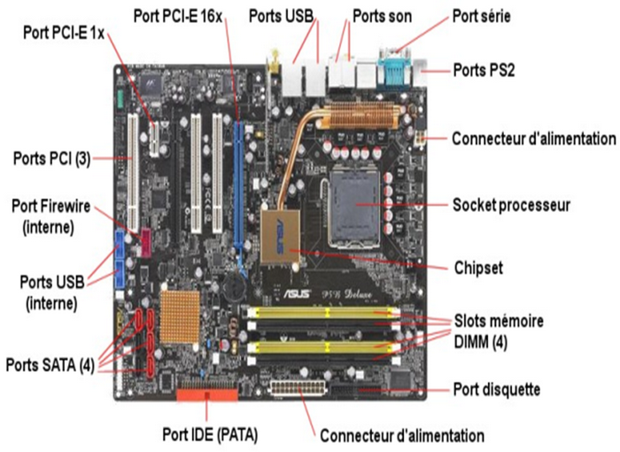

IV- La carte mère
1. Qu'est-ce qu'une carte mère ?
La carte mère est une plaque électronique qui sert à connecter entre eux les composants de l’ordinateur (processeur, RAM, carte graphique, etc.) et assure leur communication ainsi que leur alimentation électrique.

2. Quels sont les connecteurs de la carte mère ?
la carte mère possède plusieurs connecteurs :
a) Connecteur électrique :Fournir l'alimentation à la carte mère et aux composants essentiels
b) Le support de processeur: également appelé « socket », permet d’accueillir le processeur (CPU)
c) Connecteurs de la mémoire: également appelé connecteur (SDRAM, DDRAM) permet de brancher la RAM à la carte mère
• DIMM (Dual Inline Memory Module) : Utilisé dans PC de bureau (184 - 288 broches), existe en différents types DDR1, DDR2. …..
• SO-DIMM (Small Outline DIMM) : Utilisé dans Ordinateurs portables, mini-PC, (200 - 262 broches)
d) Les connecteurs des cartes d’extension : également appelé slots ( AGP, ISA, PCI), permet de connecter la carte son, la carte graphique, la carte réseau, ……;
• PCI Express: utilisé pour toutes les cartes d’extension modernes
o x1 souvent pour les cartes réseau, cartes son, etc.
e) Les connecteurs des disques: pour connecter le disque dur, le lecteur de cd/dvd-rom
• NVMe / M.2 Connecteur ultra rapide utilisé pour les SSD modernes.
• IDE (Integrated Drive Electronics): obsolète, Connecteurs très larges, vitesse faible, Disparus des systèmes modernes.
f) Les connecteur externes: également appelé «ports» permettent de connecter les composants externes:
• Port série (obsolète): permet de connecter de vieux périphériques (modem, souris et imprimante série)
• Port parallèle (ancien) : permet de connecter de vieilles imprimantes
• Port VGA: permet de connecter un ancien écran
• Port USB (Universal Serial Bus ) : USB 2.0, USB 3.0,USB 3.1et USB-C, permet de relier une grande variété de périphériques : (souris, le clavier, le modem …)
• Port RJ45 (Registered Jack 45): Permet de connecter un ordinateur à un réseau
• Prises audios: permettent de connecter des haut-parleurs, microphone et des appareils audio externes
• Port HDMI(High-Definition Multimedia Interface) : permet de connecter un écran, un téléviseur ou un vidéoprojecteur …
Remarque :
- Certains ports sont disparus des panneaux arrière, mais on peut utiliser des Adaptateurs USB pour connecter d'anciens périphériques.